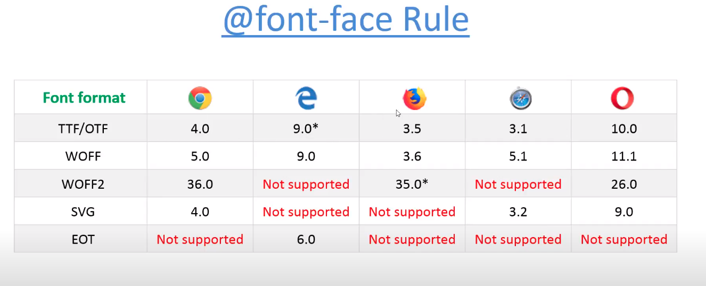

CSS3 Font Face
Note : Increase load on server and make your site slow.
Web safe font --> all mazor OS supports.
free resource for font --> https://www.fontsquirrel.com/fonts/list/tag/display
@font-face rule -->
@font-face {
font-family: myFirstFont;
src : url(open_sans.woff);
}
